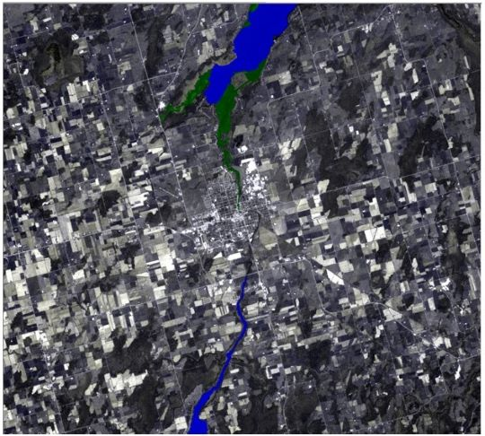

Remote Sensing Images
1 / 14

Example 1: Generated in PCI Geomatics Catalyst.RGB filtered SPOT panchromatic image where the Red band is the original, green band is 3 by 3 high pass, blue band is 5 by 5 high pass. Red vector line displaying the city of Stouffville
2 / 14

Example 2: Generated in PCI Geomatics Catalyst. RGB filtered SPOT panchromatic image where the Red band is the original, green band is 3 by 3 low pass, blue band is 5 by 5 low pass. Red vector line displaying the city of Stouffville.
3 / 14

Example 3: Generated in PCI Geomatics Catalyst. SCOOP imagery on map 3. Classified Elevation Point Cloud Lidar to create DSM (Map 2) and DTM (map 1). Ground LiDAR points selected to create DSM and DTM filtering out the noise points, can distinctly see the terrain in the map 1 and vegetation in map 2 with evidence of some potential old corn stalks on some of the crops. The aerial imagery in map 3 is what is observed in a natural colour composite (R: 3, G:2, B:1).
4 / 14

Example 4: Generated in PCI Geomatics Catalyst. Landsat 7 ETM image displaying the NDVI (Normalized Difference Vegetation Index) where the highlighted pixels indicate pixels with only a range of -1 to 0 which are the water features .
5 / 14

Example 5: Generated in PCI Geomatics Catalyst. Landsat 7ETM image with band 3 as the backdrop in grayscale. Level 1 at scale 20 displaying water features in blue and wetland features in green. Smaller polygons with scale 20 so more detail of wetland and water features
6 / 14

Example 6: Generated in PCI Geomatics Catalyst. Landsat 7ETM image, with band 3 as the backdrop in grayscale. Level 2 at scale 40 displaying water features in blue and wetland features in green. Larger polygons than Level 1, minor detail between wetland and water features seem to be lost in the smaller water features.
7 / 14

Example 7: Generated in PCI Geomatics Catalyst. Landsat 7ETM image with band 3 as the backdrop in grayscale. Level 2 at scale 40 displaying water features in blue and wetland features in green. Larger polygons than Level 1, minor detail between wetland and water features seem to be lost in the smaller water features.
8 / 14

Example 8: Generated in PCI Geomatics Catalyst. Landsat 7 ETM image displaying blue outlined polygons that are at scale 80 which greatly enlarged the size of polygons which increased the allowed sized of homogeneity. This process used for slides 4-7.
9 / 14

Example 9: Generated in PCI Geomatics Catalyst. Landsat 5 imagery with a roads shapefile outlined in red orthocorrected to the landsat iamge.
10 / 14

Example 10: Generated in PCI Geomatics Catalyst. Colour infrared photo orthorectified onto aerial image also using a DEM to get the elevations and properly bend the image to the 3D earth. Roads network also as black verctors displayed over both images.
11 / 14

Example 11: Generated in PCI Geomatics Catalyst. SPOT panchromatic image before corrections done, see next slide for sharpened image. Red vector just to display the city.
12 / 14

Example 12: Generated in PCI Geomatics Catalyst. SPOT panchromatic 5x5 high pass filter making the image more crist and sharp (note that taking a snip of the original image lost some of the quality of sharpness).
13 / 14

Example 13: Generated in PCI Geomatics Catalyst. Sentinel 1 RADAR imagery. Backdrop shows a radar composite with R:VH, G:VH, B:VV bands. Red outline is the segmentation with a scale of 50, shape and compactness of 0.5. It does a good job distinguishing different land uses (agriculture and forest).
14 / 14

Example 14: Generated in PCI Geomatics Catalyst. Landsat OLI 8 imagery displaying various landcover using the supervised classification.